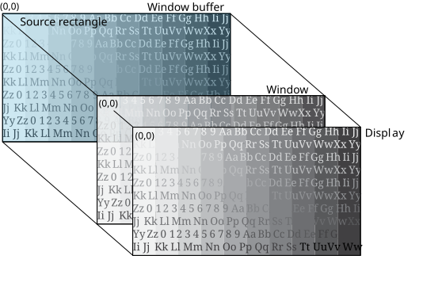

To display your source in fullscreen mode, your buffer and window sizes must be the same as your display size.
Screen uses the default position of (0,0) as the top left corner of your source rectangle, your window, and your display. Your source is displayed in fullscreen mode when your buffer, your window, and your source are the same size as your display.
By default, Screen sets your buffer to be the same size as your display. Screen also sets, by default, your source rectangle and window to be the same size as your buffer. However, in this example we illustrate how to explicitly set these sizes.
For example, let's say you want to display our sample source image in fullscreen mode. Consider the following properties:
| Property | Window | Value |
|---|---|---|
| SCREEN_PROPERTY_SIZE | Parent | 1280x720 |
| SCREEN_PROPERTY_BUFFER_SIZE | Owner | 1280x720 |
| SCREEN_PROPERTY_SOURCE_SIZE | Owner | 1280x720 |
To set these properties, use the corresponding window property with the Screen API function, screen_set_window_property_iv():
screen_window_t screen_win; /* your window */
int size[2] = { 1280, 720 }; /* size of your buffer, source rectangle, and display */
...
screen_set_window_property_iv(screen_win, SCREEN_PROPERTY_SIZE, size);
screen_set_window_property_iv(screen_win, SCREEN_PROPERTY_BUFFER_SIZE, size);
screen_set_window_property_iv(screen_win, SCREEN_PROPERTY_SOURCE_SIZE, size);
...
SCREEN_PROPERTY_SIZE is a parent window property. Typically, your application sets the buffer and source rectangle sizes only.

By setting the source rectangle to be the same size as your window buffer, you are targeting the entire source image in your window buffer for display.
Also in this example, the source rectangle is the same size as your window, so your entire source rectangle can be displayed in the window without any need for scaling.
Finally, your window size is the same as your display size so that the window fills the entire display.